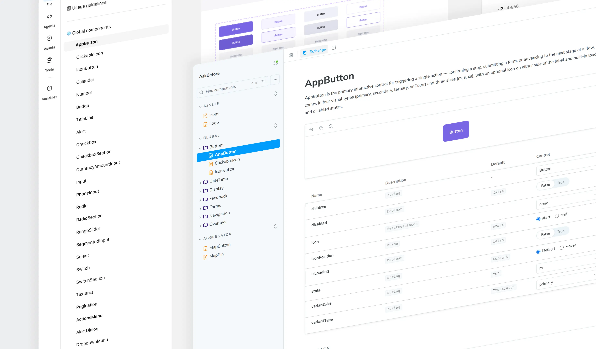
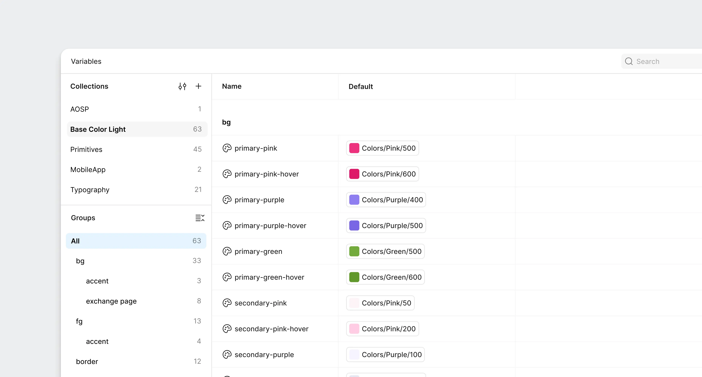

01
Figma Professional
Figma was on the Professional plan — without Extended Collections or Code Connect
The library was set up before me, for a single product. I inherited a flat list of variables: the name told you the color, but not its role in the interface. From spring 2026 I led the design system end to end — from token architecture to components, specs and code sync.
The product team had 5 people: a founder with a Senior Product Designer background, a fullstack developer, a mobile developer, a part-time designer and me.
I made and implemented the architectural decisions for the design system. Other team members build screens and prototypes on it — following the rules and components I set up.
01
Figma was on the Professional plan — without Extended Collections or Code Connect
02
I handled the architecture alone, so for every decision I weighed the time to implement it and how much work it would add later
03
all three products were already in production, so the library had to be rebuilt together with the existing interfaces

43
published components in the production library, synced with Figma
3 → 1
component set and Figma file; the product accent is set by a semantic collection mode
3
product surfaces on one system; a new portal doesn’t need its own copy of the library
01
Tokens:
give three products their own accents without three component sets
02
Components:
bring Figma in line with code so new screens are built from the existing library
03
Specs:
write down the rules so components can be used without me

Each product has its own accent: purple for the exchange, green for the aggregator, pink for the partner portal. By spring 2026 all three were already running in code, and in the library each accent had its own set of variants.

Components referenced color-named variables directly. To give a button a different product accent, I added another variant. So the library grew with the number of products.
Behavior and product color ended up tied together in the component. Every shared fix had to be repeated in three sets, and the next product would have added a fourth.
I went through the three sets and mapped what each color was responsible for. The primary button background has one role — that’s what I moved into a semantic token. I worked through the other roles the same way.
Then came two layers: a primitive stores the color value, a semantic token describes the role and references the primitive. I bound components to the semantics and ruled out direct references to primitives.

For each product I set up its own mode of the semantic layer. In Figma these are collection modes; in code, a data attribute on the product wrapper.
The component stays the same. When the mode changes, it gets different token values: the same button turns purple, green or pink. The whole library for three products fits in one Figma file.

A new product is just one more semantic mode; components don’t change. The theme lives on the primitive layer: color values change there, roles stay the same.
The system has 150 color tokens. Its own spacing and radius tokens: zero.
The product was built on Tailwind from the start, so I kept its spacing scale. A vocabulary of my own on top of it would have added a second name for the same value, and keeping the two in sync would have been on me too.
Figma uses a library with the same scale — variables are named like the classes in code, one vocabulary for design and implementation.
→ → → So I deliberately kept the dependency on Tailwind. The product has no plan to move off it. If the interface ever needs its own density, that will be the reason to introduce custom tokens.
Some components existed only in code; others had different properties in Figma or were missing states. While people were reading the designs, a conversation covered the gap. Once we moved to building through MCP, an agent started reading the designs. It took a property from Figma, couldn’t find it in code and created it from scratch.
Each description of the component looked workable on its own. Building from them often produced a duplicate.

I took the implementation as the basis: these components were already working in the product. That’s what I used to update the Figma library.
I worked component by component: read the code, checked properties and states, then brought the design in line with them. AI agents working through Figma MCP helped find and highlight discrepancies.
Matching properties wasn’t enough. The agent still had to be told which code component corresponds to a specific node in Figma. Without that link, it kept creating duplicates.
Code Connect exists for exactly this, but it wasn’t available on our plan. I designed my own mechanism — component-manifest.json at the root of the repository.

The manifest records which library component corresponds to which code component and how Figma variants translate into its props. The file is versioned together with the code. In the instructions, I fixed the order: before generating markup, the agent reads the manifest and imports existing components.
The manifest also became a way to check the library’s completeness. If an entry is incomplete, something is missing between Figma and code: the component itself, a property or the mapping between them.
If you rename a component or its property without updating the mapping, the build fails. The mismatch shows up immediately.
For new components, the team agreed on a rule: the manifest entry appears together with the component. I set the format and the rules; from there, whoever writes the code can maintain the entry.
The manifest now has 48 entries.
A component in the library shows how it’s built. But it doesn’t always tell you when to use it, which state to choose and how it should behave.
While I was building the screens myself, these rules stayed in my head. Once others joined, I had to write them down so people wouldn’t have to come to me for explanations.
I wrote component specs and set up Storybook, where designers and developers can see every property and state of the components live. It also shows sync progress: a component gets in only once it fully matches in Figma and in code.

All specs share one structure: a designer uses it to choose a component for a screen, a developer to check behavior, and an agent to get the rules for building.
In the repository, the same knowledge is split into three sections: general design system rules, instructions for the agent and component specs.
43
published components in the production library, synced with Figma
3 → 1
component set and Figma file; the product accent is set by a semantic collection mode
3
product surfaces on one system; a new portal doesn’t need its own copy of the library
I built the system, and now other team members build screens and prototypes on it too. The token and component rules I set held up through these changes — new implementations fit into the same structure.
The flat library was started before me for one product, but I was the one who built the partner portal and the aggregator on it: for every new accent I added component variants. By spring I had three sets that later had to be merged into one.
Primitives and roles should have been separated the moment it became clear there would be more than one product accent — then new products would have been built on a shared library, and working interfaces wouldn’t have had to be migrated onto it.